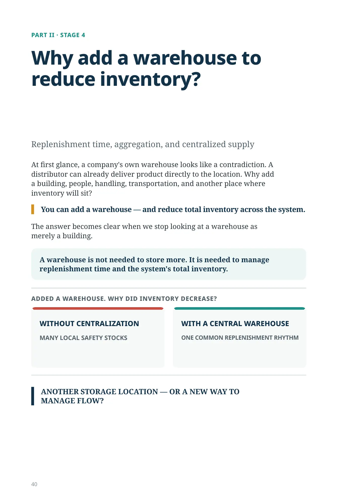
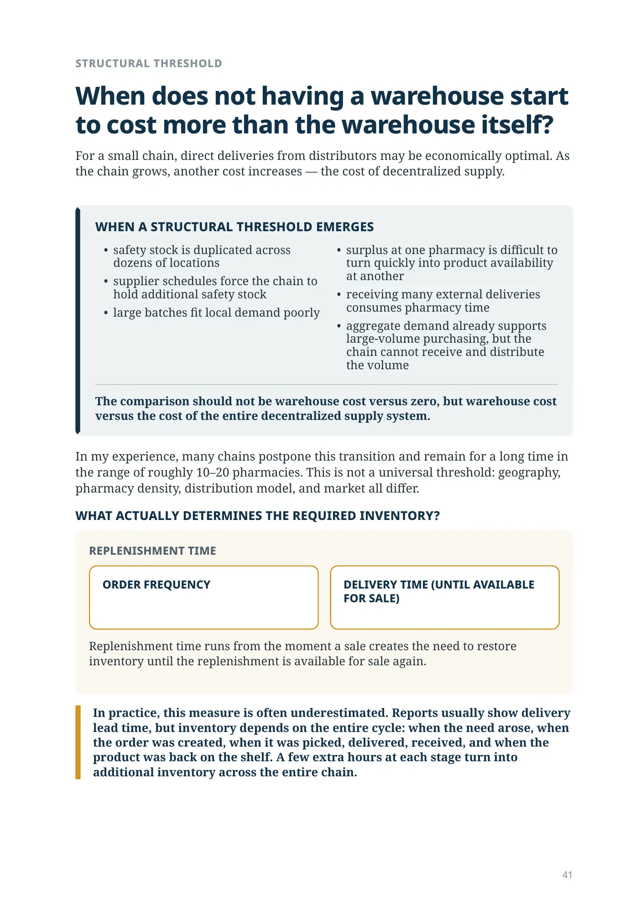
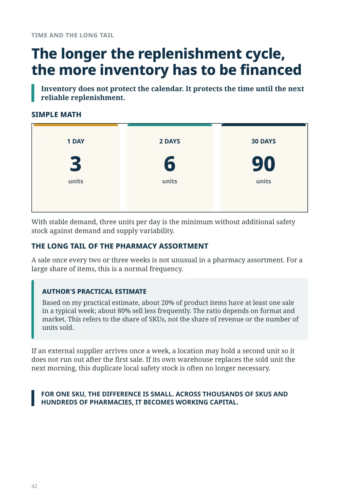
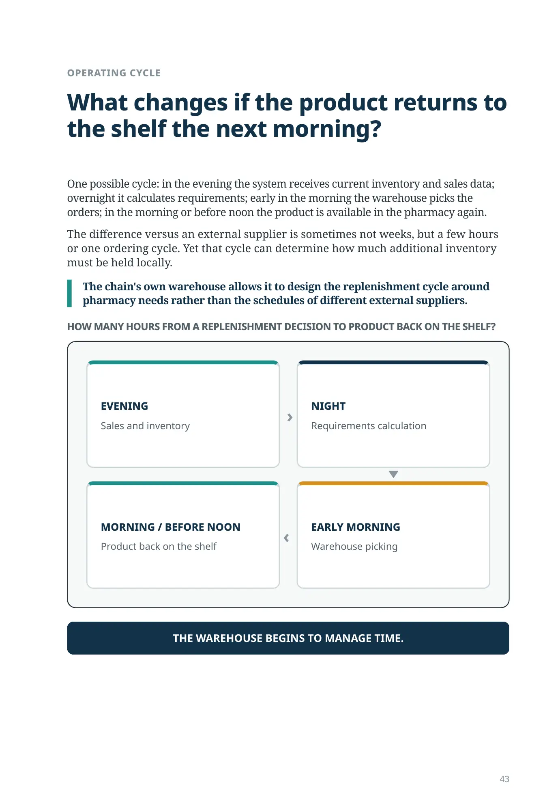
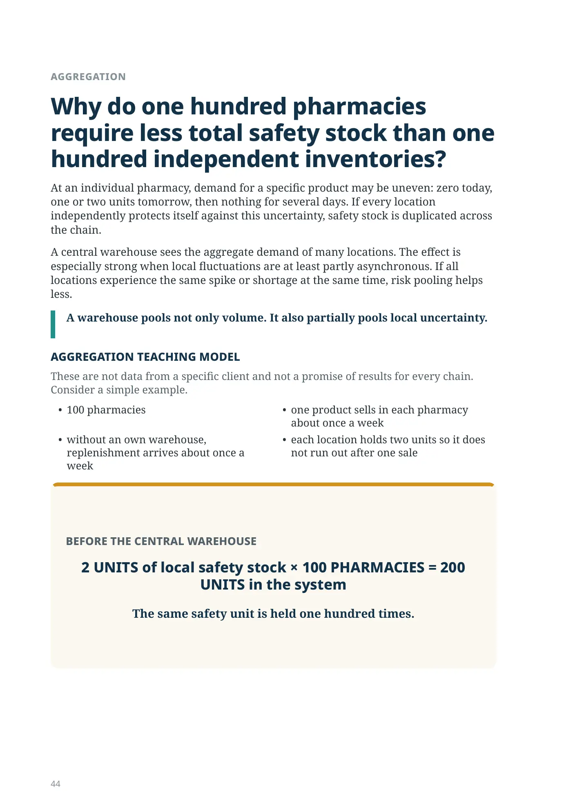
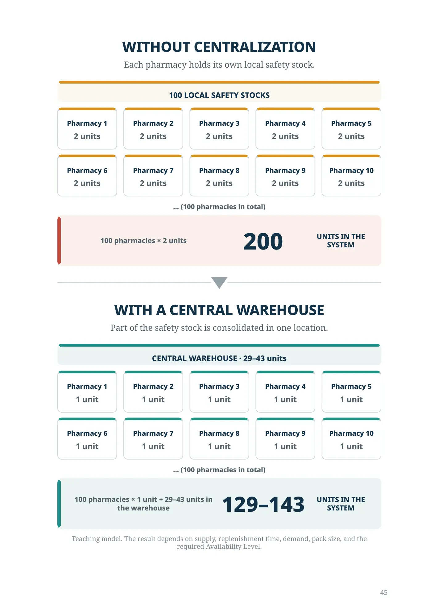
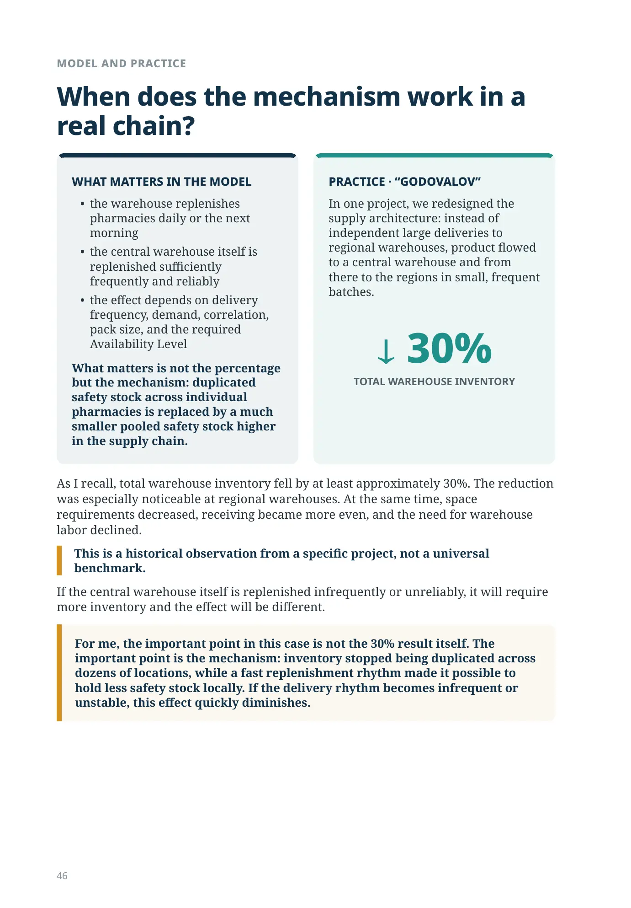
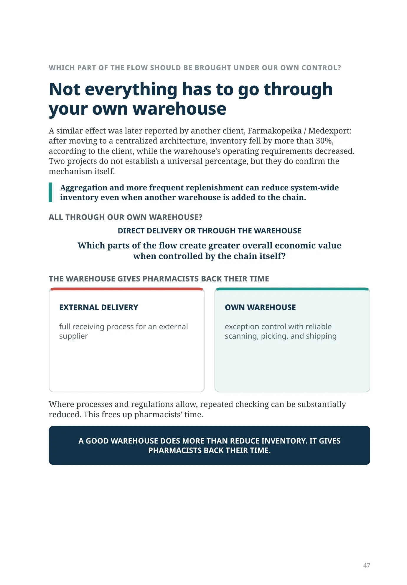
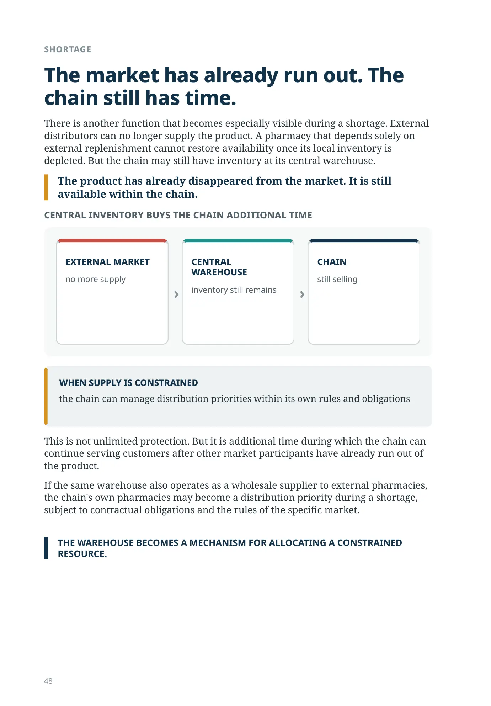
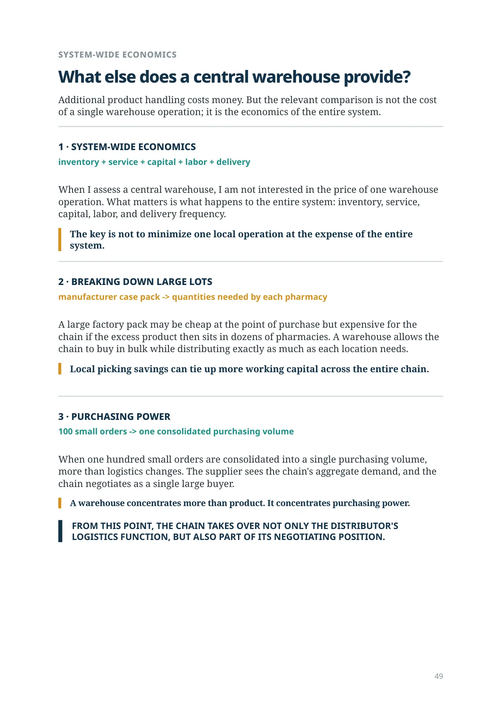
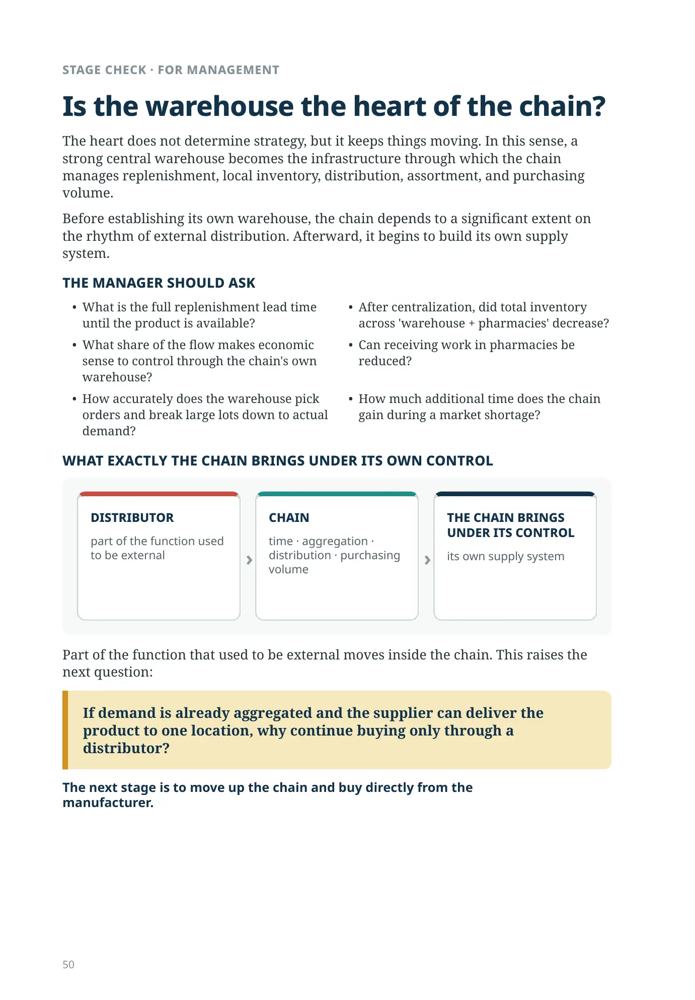
Why create another storage location if we want to reduce inventory?
PART II · STAGE 4
Why add a warehouse to reduce inventory?
Replenishment time, aggregation, and centralized supply
At first glance, a company's own warehouse looks like a contradiction. A distributor can already deliver product directly to the location. Why add a building, people, handling, transportation, and another place where inventory will sit?
You can add a warehouse — and reduce total inventory across the system.
The answer becomes clear when we stop looking at a warehouse as merely a building.
A warehouse is not needed to store more. It is needed to manage replenishment time and the system's total inventory.
ADDED A WAREHOUSE. WHY DID INVENTORY DECREASE?
WITHOUT CENTRALIZATION
MANY LOCAL SAFETY STOCKS
WITH A CENTRAL WAREHOUSE
ONE COMMON REPLENISHMENT RHYTHM
ANOTHER STORAGE LOCATION — OR A NEW WAY TO MANAGE FLOW?
STRUCTURAL THRESHOLD
When does not having a warehouse start to cost more than the warehouse itself?
For a small chain, direct deliveries from distributors may be economically optimal. As the chain grows, another cost increases — the cost of decentralized supply.
WHEN A STRUCTURAL THRESHOLD EMERGES
- safety stock is duplicated across dozens of locations
- supplier schedules force the chain to hold additional safety stock
- large batches fit local demand poorly
- surplus at one pharmacy is difficult to turn quickly into product availability at another
- receiving many external deliveries consumes pharmacy time
- aggregate demand already supports large-volume purchasing, but the chain cannot receive and distribute the volume
The comparison should not be warehouse cost versus zero, but warehouse cost versus the cost of the entire decentralized supply system.
In my experience, many chains postpone this transition and remain for a long time in the range of roughly 10–20 pharmacies. This is not a universal threshold: geography, pharmacy density, distribution model, and market all differ.
WHAT ACTUALLY DETERMINES THE REQUIRED INVENTORY?
REPLENISHMENT TIME
ORDER FREQUENCY
DELIVERY TIME (UNTIL AVAILABLE FOR SALE)
Replenishment time runs from the moment a sale creates the need to restore inventory until the replenishment is available for sale again.
In practice, this measure is often underestimated. Reports usually show delivery lead time, but inventory depends on the entire cycle: when the need arose, when the order was created, when it was picked, delivered, received, and when the product was back on the shelf. A few extra hours at each stage turn into additional inventory across the entire chain.
TIME AND THE LONG TAIL
The longer the replenishment cycle, the more inventory has to be financed
Inventory does not protect the calendar. It protects the time until the next reliable replenishment.
SIMPLE MATH
1 DAY
3
units
2 DAYS
6
units
30 DAYS
90
units
With stable demand, three units per day is the minimum without additional safety stock against demand and supply variability.
THE LONG TAIL OF THE PHARMACY ASSORTMENT
A sale once every two or three weeks is not unusual in a pharmacy assortment. For a large share of items, this is a normal frequency.
If an external supplier arrives once a week, a location may hold a second unit so it does not run out after the first sale. If its own warehouse replaces the sold unit the next morning, this duplicate local safety stock is often no longer necessary.
FOR ONE SKU, THE DIFFERENCE IS SMALL. ACROSS THOUSANDS OF SKUS AND HUNDREDS OF PHARMACIES, IT BECOMES WORKING CAPITAL.
OPERATING CYCLE
What changes if the product returns to the shelf the next morning?
One possible cycle: in the evening the system receives current inventory and sales data; overnight it calculates requirements; early in the morning the warehouse picks the orders; in the morning or before noon the product is available in the pharmacy again.
The difference versus an external supplier is sometimes not weeks, but a few hours or one ordering cycle. Yet that cycle can determine how much additional inventory must be held locally.
The chain's own warehouse allows it to design the replenishment cycle around pharmacy needs rather than the schedules of different external suppliers.
HOW MANY HOURS FROM A REPLENISHMENT DECISION TO PRODUCT BACK ON THE SHELF?
EVENING
Sales and inventory
NIGHT
Requirements calculation
EARLY MORNING
Warehouse picking
MORNING / BEFORE NOON
Product back on the shelf
THE WAREHOUSE BEGINS TO MANAGE TIME.
AGGREGATION
Why do one hundred pharmacies require less total safety stock than one hundred independent inventories?
At an individual pharmacy, demand for a specific product may be uneven: zero today, one or two units tomorrow, then nothing for several days. If every location independently protects itself against this uncertainty, safety stock is duplicated across the chain.
A central warehouse sees the aggregate demand of many locations. The effect is especially strong when local fluctuations are at least partly asynchronous. If all locations experience the same spike or shortage at the same time, risk pooling helps less.
A warehouse pools not only volume. It also partially pools local uncertainty.
AGGREGATION TEACHING MODEL
These are not data from a specific client and not a promise of results for every chain. Consider a simple example.
- 100 pharmacies
- one product sells in each pharmacy about once a week
- without an own warehouse, replenishment arrives about once a week
- each location holds two units so it does not run out after one sale
BEFORE THE CENTRAL WAREHOUSE
2 UNITS of local safety stock × 100 PHARMACIES = 200 UNITS in the system
The same safety unit is held one hundred times.
WITHOUT CENTRALIZATION
Each pharmacy holds its own local safety stock.
100 LOCAL SAFETY STOCKS
Pharmacy 1
2 units
Pharmacy 2
2 units
Pharmacy 3
2 units
Pharmacy 4
2 units
Pharmacy 5
2 units
Pharmacy 6
2 units
Pharmacy 7
2 units
Pharmacy 8
2 units
Pharmacy 9
2 units
Pharmacy 10
2 units
… (100 pharmacies in total)
100 pharmacies × 2 units
200
UNITS IN THE SYSTEM
WITH A CENTRAL WAREHOUSE
Part of the safety stock is consolidated in one location.
CENTRAL WAREHOUSE · 29–43 units
Pharmacy 1
1 unit
Pharmacy 2
1 unit
Pharmacy 3
1 unit
Pharmacy 4
1 unit
Pharmacy 5
1 unit
Pharmacy 6
1 unit
Pharmacy 7
1 unit
Pharmacy 8
1 unit
Pharmacy 9
1 unit
Pharmacy 10
1 unit
… (100 pharmacies in total)
100 pharmacies × 1 unit + 29–43 units in the warehouse
129–143
UNITS IN THE SYSTEM
Teaching model. The result depends on supply, replenishment time, demand, pack size, and the required Availability Level.
MODEL AND PRACTICE
When does the mechanism work in a real chain?
WHAT MATTERS IN THE MODEL
- the warehouse replenishes pharmacies daily or the next morning
- the central warehouse itself is replenished sufficiently frequently and reliably
- the effect depends on delivery frequency, demand, correlation, pack size, and the required Availability Level
What matters is not the percentage but the mechanism: duplicated safety stock across individual pharmacies is replaced by a much smaller pooled safety stock higher in the supply chain.
PRACTICE · “GODOVALOV”
In one project, we redesigned the supply architecture: instead of independent large deliveries to regional warehouses, product flowed to a central warehouse and from there to the regions in small, frequent batches.
30%
TOTAL WAREHOUSE INVENTORY
As I recall, total warehouse inventory fell by at least approximately 30%. The reduction was especially noticeable at regional warehouses. At the same time, space requirements decreased, receiving became more even, and the need for warehouse labor declined.
This is a historical observation from a specific project, not a universal benchmark.
If the central warehouse itself is replenished infrequently or unreliably, it will require more inventory and the effect will be different.
For me, the important point in this case is not the 30% result itself. The important point is the mechanism: inventory stopped being duplicated across dozens of locations, while a fast replenishment rhythm made it possible to hold less safety stock locally. If the delivery rhythm becomes infrequent or unstable, this effect quickly diminishes.
WHICH PART OF THE FLOW SHOULD BE BROUGHT UNDER OUR OWN CONTROL?
Not everything has to go through your own warehouse
A similar effect was later reported by another client, Farmakopeika / Medexport: after moving to a centralized architecture, inventory fell by more than 30%, according to the client, while the warehouse's operating requirements decreased. Two projects do not establish a universal percentage, but they do confirm the mechanism itself.
Aggregation and more frequent replenishment can reduce system-wide inventory even when another warehouse is added to the chain.
ALL THROUGH OUR OWN WAREHOUSE?
DIRECT DELIVERY OR THROUGH THE WAREHOUSE
Which parts of the flow create greater overall economic value when controlled by the chain itself?
THE WAREHOUSE GIVES PHARMACISTS BACK THEIR TIME
EXTERNAL DELIVERY
full receiving process for an external supplier
OWN WAREHOUSE
exception control with reliable scanning, picking, and shipping
Where processes and regulations allow, repeated checking can be substantially reduced. This frees up pharmacists' time.
A GOOD WAREHOUSE DOES MORE THAN REDUCE INVENTORY. IT GIVES PHARMACISTS BACK THEIR TIME.
SHORTAGE
The market has already run out. The chain still has time.
There is another function that becomes especially visible during a shortage. External distributors can no longer supply the product. A pharmacy that depends solely on external replenishment cannot restore availability once its local inventory is depleted. But the chain may still have inventory at its central warehouse.
The product has already disappeared from the market. It is still available within the chain.
CENTRAL INVENTORY BUYS THE CHAIN ADDITIONAL TIME
EXTERNAL MARKET
no more supply
CENTRAL WAREHOUSE
inventory still remains
CHAIN
still selling
This is not unlimited protection. But it is additional time during which the chain can continue serving customers after other market participants have already run out of the product.
If the same warehouse also operates as a wholesale supplier to external pharmacies, the chain's own pharmacies may become a distribution priority during a shortage, subject to contractual obligations and the rules of the specific market.
THE WAREHOUSE BECOMES A MECHANISM FOR ALLOCATING A CONSTRAINED RESOURCE.
SYSTEM-WIDE ECONOMICS
What else does a central warehouse provide?
Additional product handling costs money. But the relevant comparison is not the cost of a single warehouse operation; it is the economics of the entire system.
1 · SYSTEM-WIDE ECONOMICS
inventory + service + capital + labor + delivery
When I assess a central warehouse, I am not interested in the price of one warehouse operation. What matters is what happens to the entire system: inventory, service, capital, labor, and delivery frequency.
The key is not to minimize one local operation at the expense of the entire system.
2 · BREAKING DOWN LARGE LOTS
manufacturer case pack -> quantities needed by each pharmacy
A large factory pack may be cheap at the point of purchase but expensive for the chain if the excess product then sits in dozens of pharmacies. A warehouse allows the chain to buy in bulk while distributing exactly as much as each location needs.
Local picking savings can tie up more working capital across the entire chain.
3 · PURCHASING POWER
100 small orders -> one consolidated purchasing volume
When one hundred small orders are consolidated into a single purchasing volume, more than logistics changes. The supplier sees the chain's aggregate demand, and the chain negotiates as a single large buyer.
A warehouse concentrates more than product. It concentrates purchasing power.
FROM THIS POINT, THE CHAIN TAKES OVER NOT ONLY THE DISTRIBUTOR'S LOGISTICS FUNCTION, BUT ALSO PART OF ITS NEGOTIATING POSITION.
STAGE CHECK · FOR MANAGEMENT
Is the warehouse the heart of the chain?
The heart does not determine strategy, but it keeps things moving. In this sense, a strong central warehouse becomes the infrastructure through which the chain manages replenishment, local inventory, distribution, assortment, and purchasing volume.
Before establishing its own warehouse, the chain depends to a significant extent on the rhythm of external distribution. Afterward, it begins to build its own supply system.
THE MANAGER SHOULD ASK
- What is the full replenishment lead time until the product is available?
- After centralization, did total inventory across 'warehouse + pharmacies' decrease?
- What share of the flow makes economic sense to control through the chain's own warehouse?
- Can receiving work in pharmacies be reduced?
- How accurately does the warehouse pick orders and break large lots down to actual demand?
- How much additional time does the chain gain during a market shortage?
WHAT EXACTLY THE CHAIN BRINGS UNDER ITS OWN CONTROL
DISTRIBUTOR
part of the function used to be external
CHAIN
time · aggregation · distribution · purchasing volume
THE CHAIN BRINGS UNDER ITS CONTROL
its own supply system
Part of the function that used to be external moves inside the chain. This raises the next question:
If demand is already aggregated and the supplier can deliver the product to one location, why continue buying only through a distributor?
The next stage is to move up the chain and buy directly from the manufacturer.